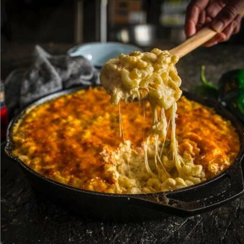
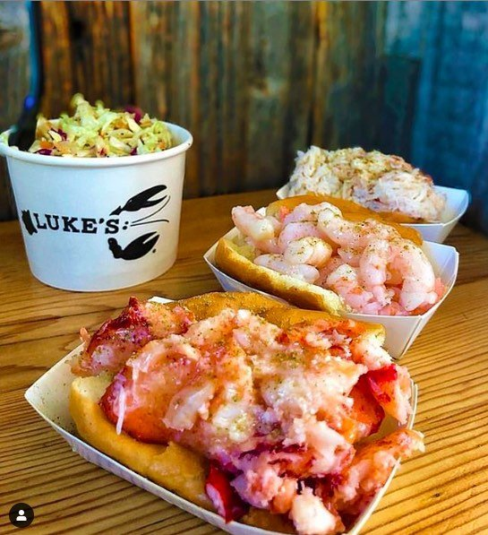
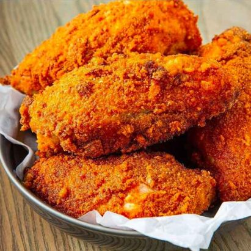
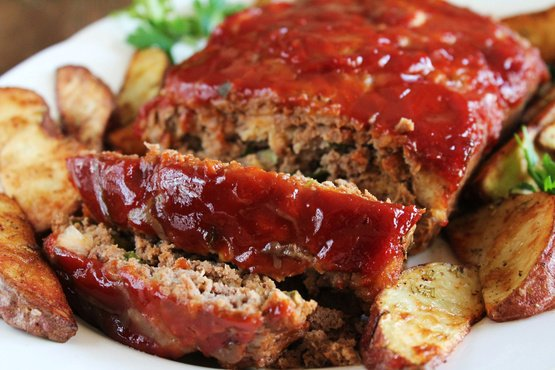

L'histoire de New-York
New York est une ville composée de 5 arrondissements à l'embouchure du fleuve Hudson et de l'océan Atlantique. En son centre se trouve Manhattan, un arrondissement densément peuplé faisant partie des principaux centres commerciaux, financiers et culturels du monde. Ses sites incontournables comprennent des gratte-ciel comme l'Empire State Building et l'immense Central Park. Le théâtre de Broadway est situé sur Times Square.
New York. Ceux qui n’y ont jamais posé les pieds la connaissent déjà, par le cinéma, les séries télé, la musique, la littérature. New York est une machine à rêves. Diverse, frénétique, électrique, magnétique, magique, vertigineuse, inventive, intense... les adjectifs se bousculent pour la décrire. C’est la ville des extrêmes et des superlatifs. New York est une machine à rêves. Diverse, tolérante, puissante, frénétique, électrique, magique, vertigineuse, inventive... les adjectifs se bousculent pour la décrire. C'est la ville des extrêmes et des superlatifs. New York demeure la mégapole la plus peuplée des États-Unis, la plus visitée aussi. Ses musées comptent parmi les plus riches du monde. Et de sa mythique skyline, à l’emplacement des défuntes Twin Towers, émerge la silhouette à facettes du One World Trade Center, aujourd’hui le plus haut gratte-ciel d’Amérique du Nord. New York, c’est LA ville, la ville des villes. Trop petite pour être un pays et trop grande pour être une simple cité. Chaque borough, chaque quartier a son identité propre, mais rien n'est figé. Il n’y a encore pas si longtemps, un voyage à New York se résumait à une visite du cœur de Manhattan. Rares étaient les touristes qui osaient s’aventurer jusqu’à Harlem, alors qu’aujourd’hui c’est un must pour sa cool attitude et sa trépidante vie nocturne. Même le Bronx devient une attraction touristique ! Quant à Brooklyn, c'est « le Manhattan du XXIe siècle », selon l'écrivain Jerome Charyn. À propos de cuisine, elle aussi est en pleine révolution. La vague bio-écolo qui a déferlé sur la Big Apple a redonné aux New-Yorkais le goût des bons produits. À l'instar de Brooklyn, les marchés fermiers fleurissent et les fermes urbaines poussent jusque sur les toits des immeubles. Une nouvelle génération de chefs est venue chambouler les traditions culinaires. New York affiche un bourdonnement créatif permanent, nourri par une énergie inépuisable. Et si certains épisodes sombres ont laissé des traces indélébiles, New York se relève toujours, prête pour de nouveaux défis d'envergure. Everything is energy !
Les quartiers populaire de New-York
Central-Park
Créer en 1858
Statue de la Liberté
Créer le 28 octobre 1886
Times Square
Créer le 26 juillet 1788
Wall Street
Créer le 17 mai 1792
Les spécialités de New-York
Dans presque tous les restaurants, mais le meilleur mac and cheese du monde (rien que ça !) se trouverait chez Beecher’s, un artisan fromager qui propose aussi… ses petits pots de mac and cheese, prêts à déguster à emporter ! Version américaine de notre gratin de coquillettes au gruyère, le mac and cheese se déguste aux Etats-Unis dans une version un peu plus… décadente. Soyons clairs : plus c’est crémeux, mieux c’est ! Plus il y a de fils de fromage, mieux c’est ! Plus c’est dégoulinant, mieux c’est ! On obtient donc souvent au final un plat de pâtes… inoubliable ! A base de sauce au fromage, comme on en trouve rarement ici. Les sauces qui accompagnent les pâtes (faites de cheddar, de gouda, de gruyère… parfois de tous en même temps !) laissent rarement indifférent les amateurs de fromages que nous sommes. Bref, une fois qu’on a goûté, on en devient complètement accro ! Et même pas besoin de viande pour accompagner 🙂
Ess a bagel, Murray’s Bagel pour les meilleurs bagels de New York. Autre célèbre spécialité new yorkaise, le bagel est reconnaissable à son pain circulaire troué au centre. Le pain à bagel peut être nature ou assaisonné au sésame, aux graines de pavot etc. A l’intérieur, le bagel se décline en une foule de possibilités. Le plus connu étant le célèbre bagel au saumon fumé et cream cheese, un vrai incontournable du brunch dominical new yorkais. Egalement dégusté au petit déjeuner pour bien attaquer la journée, on en trouve garnis aux oeufs, au thon, au poulet accompagnés de différentes salades et crudités.
Le Lobster Roll est un sandwich à base de homard servi dans un pain à hot dog. Cette spécialité vient tout droit de la région de la Nouvelle-Angleterre au nord-est des Etats-Unis. Les homards, présents en très grand nombre dans la région sont déclinés sous toutes formes de plats. Le plus connu d’entre eux étant le Lobster Roll, un sandwich garni de morceaux de homard et assaisonné pour certains de mayonnaise, pour d’autres d’une sauce au beurre persillée. Un VRAI délice, franchement pas excessif pour un met d’exception comme le homard.
Katz’s Delicatessen est LE lieu mythique où déguster le meilleur sandwich au pastrami de New York. Pour le porc effiloché, on en trouve à la carte de tous les restaurants BBQ. Sinon, j’ai goûté l’un des meilleurs au stand BBQ à l’étage du Whole Food Market de East Houston Street. Oubliez vite le sacro-saint jambon-beurre, vous n’en trouverez pas de l’autre côté de l’Atlantique. Rassurez-vous, vous trouverez beaucoup mieux : goûtez tout d’abord à un énorme sandwich au pastrami, une des plus grandes spécialités de New York. Le pastrami est de la viande de boeuf fumée coupée en tranches fines et cuite à la vapeur. Et si vous voulez aller du côté des spécialités du sud des Etats-Unis, optez plutôt pour du pulled pork (porc effiloché) qui se déguste soit sous forme de sandwich, soi seul. Délicieusement enrobé de sa sauce barbecue, on en devient vite accro une fois qu’on l’a goûté !
Dan and John’s Wings et dans tous les restaurants BBQ et bars sportifs. Oubliez les petites ailes de poulet riquiqui et sans goût. Les chicken wings que vous trouverez aux Etats-Unis vont vous réconcilier avec le poulet. Simplement frites ou marinées dans des sauces aigre douce ou barbecue, elle vont rendront rapidement addict ! Sinon, autre variante largement plébiscitée aux Etats-Unis : le fried chicken (poulet frit dans toutes sortes de panures) qu’on trouve dans tous les restaurants et pas juste à KFC ! Bref, si vous aimez le poulet, vous allez pouvoir vous faire plaisir aux Etats-Unis !
Dans tous les restaurants BBQ. Je m’en lèche les babines juste à regarder l’image. Les ribs sont une spécialité de la cuisine BBQ du sud des Etats-Unis. Ces travers de porc sont marinés (la plupart du temps dans de la sauce barbecue) puis cuits lentement au barbecue. Attention : il ne faut pas avoir peur de se salir ! A force de chercher à attraper le moindre petit bout de viande coincé entre deux côtes, on s’en met littéralement partout ! Mais c’est comme ça qu’on les apprécie le mieux 🙂 Accompagnez-les d’un coleslaw (petit salade de choux à la mayonnaise) pour rester fidèle à la tradition.
Dans tous les restaurants BBQ. Peut-être le moins connu (en tout cas en France) de ce top 10 des plats incontournables à déguster à New York. Certains d’entre vous en ont peut-être déjà entendu parler dans des films ou séries télé américaines. Le meat loaf (ou pain de viande en français) est pourtant un plat emblématique des Etats-Unis ! Il s’agit d’une spécialité à base de viande de boeuf hachée et de mie de pain (ou de chapelure), assaisonnée et recouverte d’une délicieuse sauce sucrée salée caramélisée. Le pain de viande est généralement servi avec des frites de pomme de terre ou de patate douce ou bien avec de la purée.
Dans n’importe quel stand de rue à New York. Oui, vous avez bien lu, on parle ici de pretzel avec un p, comme on le prononce à l’américaine ! Le pretzel est un véritable incontournable de New York puisqu’on le trouve à peu près à chaque coin de rue, vendu par des centaines de vendeurs ambulants. Ces pretzels géants se dégustent comme des snacks, à n’importe quelle heure du jour ou de la nuit. Ils sont en fait l’équivalent des bretzels que nous connaissons chez nous, mais en bien plus grands, croustillants à l’extérieur et moëlleux à l’intérieur. Vendus chauds, ils sont le casse-croûte salé parfait pour combler les petit creux.
Magnolia Bakery, Sugar Sweet Sunshine On ne présente plus ces petits gâteaux colorés et tellement bons ! Vous en trouverez à tous les coins de rue mais les cupcakes les plus célèbres de New York se dégustent chez Magnolia Bakery. On en trouve également de très bons à Sugar Sweet Sunshine, une petite pâtisserie du Lower East Side. Les cupcakes y sont en plus vraiment bon marché ! A vous de trouver celui qui vous emmènera au septième ciel parmi la multitude de parfums qui existent. Des plus classiques (vanille, chocolat, fraise, citron, red velvet, noix de coco, banane…) aux plus excentriques (citrouille, beurre de cacahuète, pistache…), il y a en vraiment pour tous les goûts !
Junior’s et Eileen’s Special Cheesecake vendent quelques-uns des meilleurs cheesecake de New York. Dessert New Yorkais par excellence, le cheesecake est parfait à déguster pour un petit quatre heures, tranquillement installé sur un banc dans un square. Crémeux, onctueux, aérien, ce dessert à base de cream cheese ravira les amateurs de délices sucrés. Il en existe une multitude de variantes, aromatisées à toutes sortes de fruits ou de coulis. Mais mon préféré reste définitivement le cheesecake classique, légèrement vanillé sur son lit de biscuit croustillant.